DownGo · Rafix Technologies
See DownGo in action
Screenshots from DownGo show the download queue, progress details, browser handoff, media tools, and settings. Open any image full size to inspect the interface.

Download manager
Monitor active downloads
The main window shows the file, downloaded size, progress, resume availability, speed, estimated time, and status. The live monitor also reports the active transfer and thread count.
DownGo’s Microsoft Store listing states Free supports up to 4 parallel connections and Pro up to 16. Actual performance depends on the download source and your network.
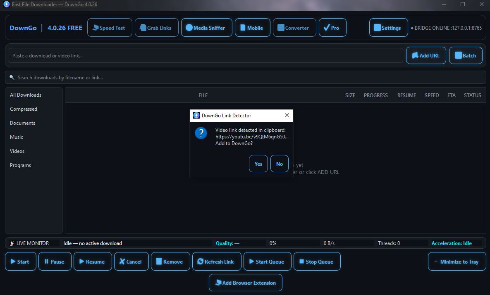
Browser handoff
Send supported links to DownGo
The Link Detector can recognize a supported video link copied to the clipboard and ask whether to add it to DownGo. Review the source and make sure you have permission to download its content.
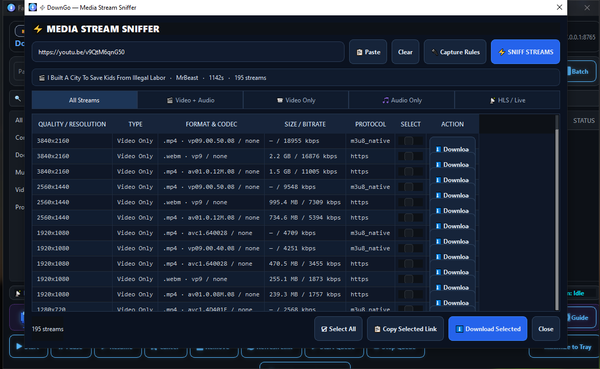
Media Stream Sniffer
Inspect available media streams
Enter a page URL to inspect streams the source makes available. The list can show resolution, format, codec, size or bitrate, and protocol. Stream availability and quality depend on the source and your network.
Use media tools only where you have permission and in line with the source platform’s rules.
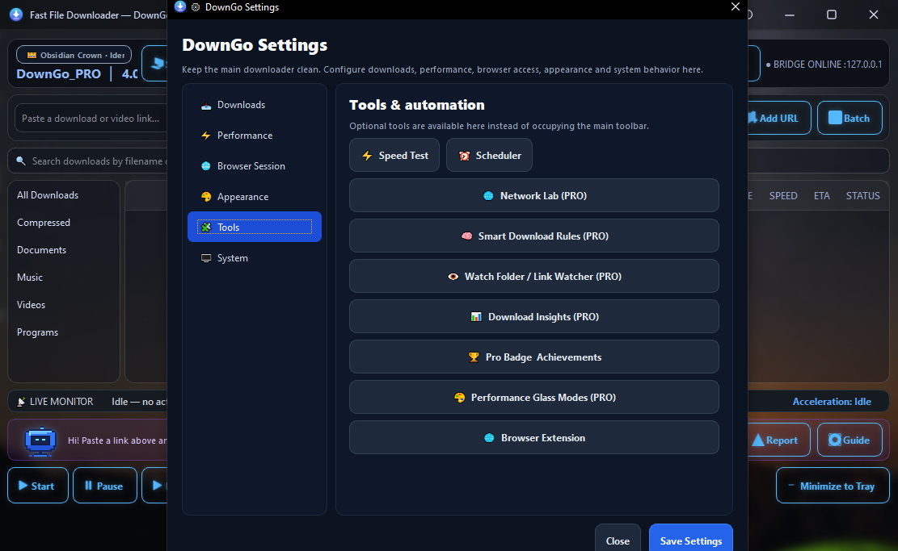
Tools and automation
More controls in one place
The tools screen groups Speed Test, Scheduler, Network Lab, Smart Download Rules, Watch Folder / Link Watcher, Download Insights, performance themes, and browser extension controls. Pro tools are marked in the app.
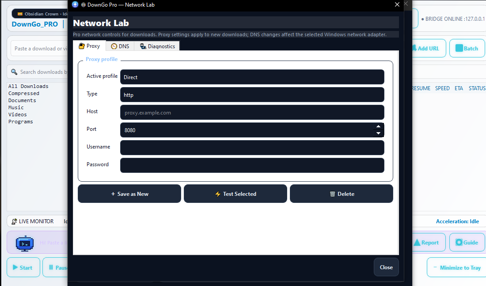
Network Lab · Pro
Configure network options
The Network Lab screenshot shows proxy profile fields for connection type, host, port, and optional credentials. The app also includes DNS and diagnostics tabs. Use proxy credentials only with a provider and connection you trust.
DownGo 4.0.26 screenshot gallery
More of the current app
See real screens for downloads, settings, network tools, and browser integration.
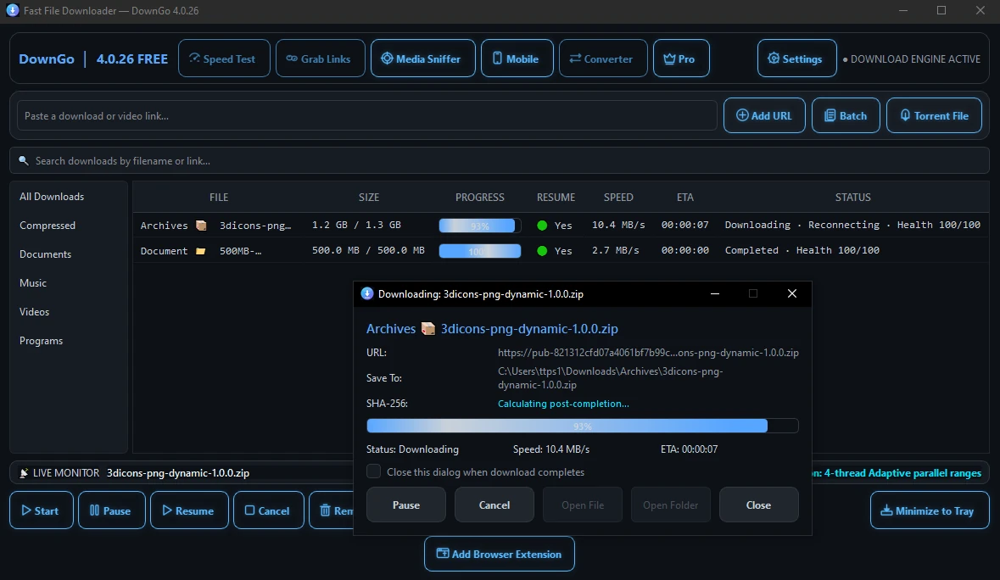
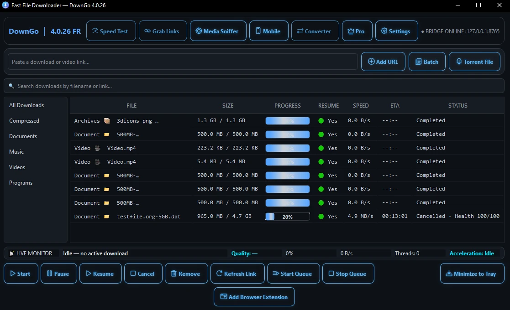
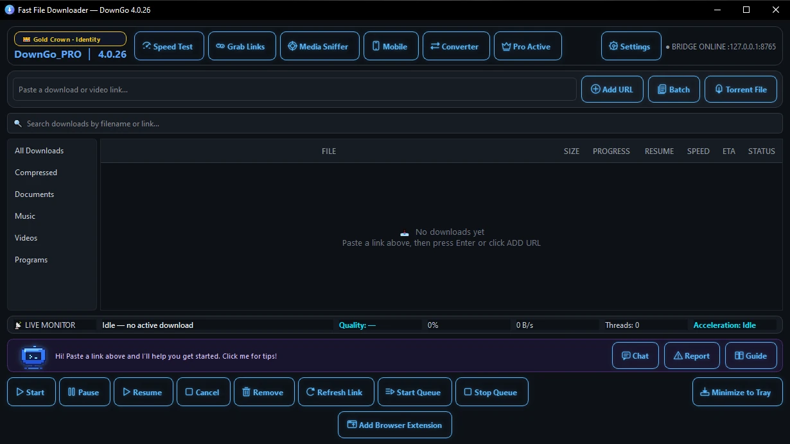
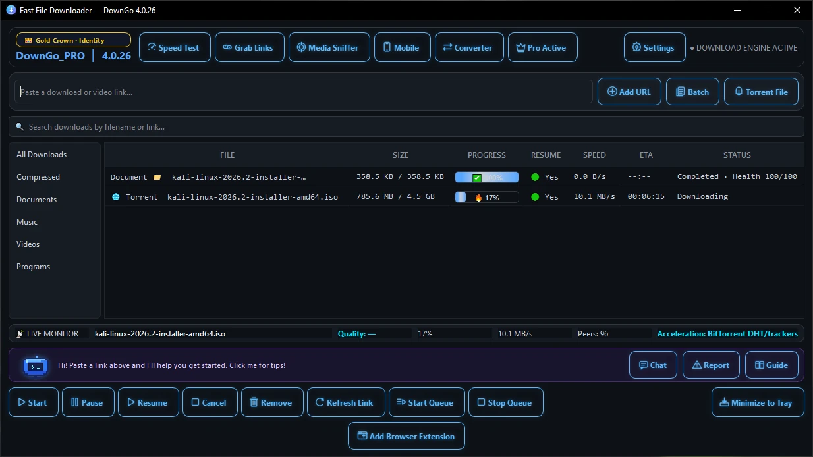
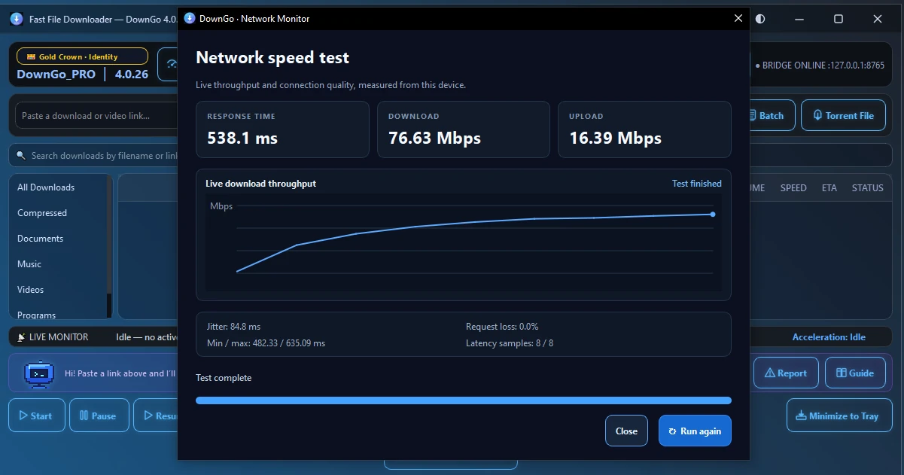
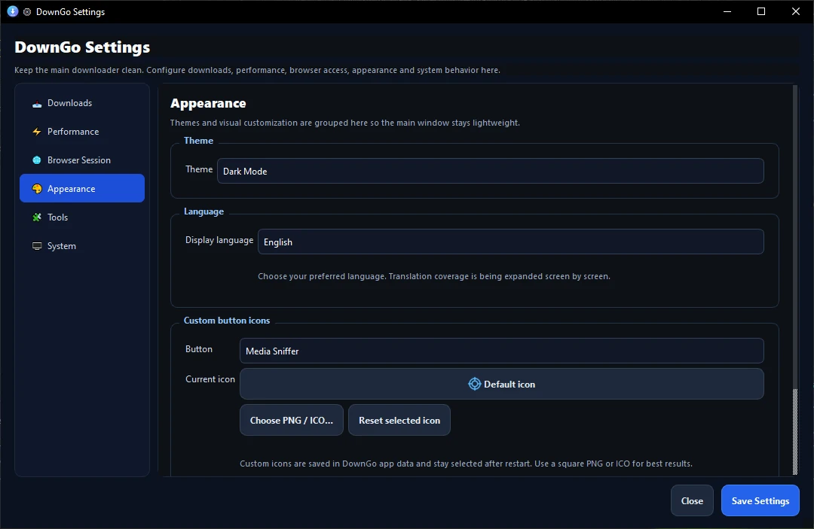
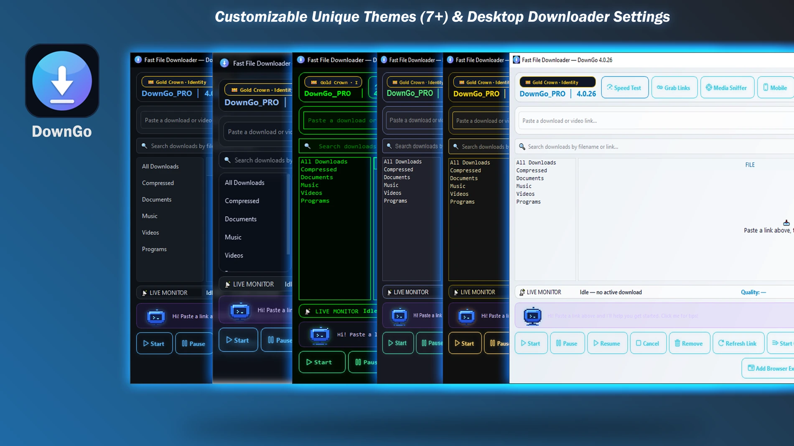
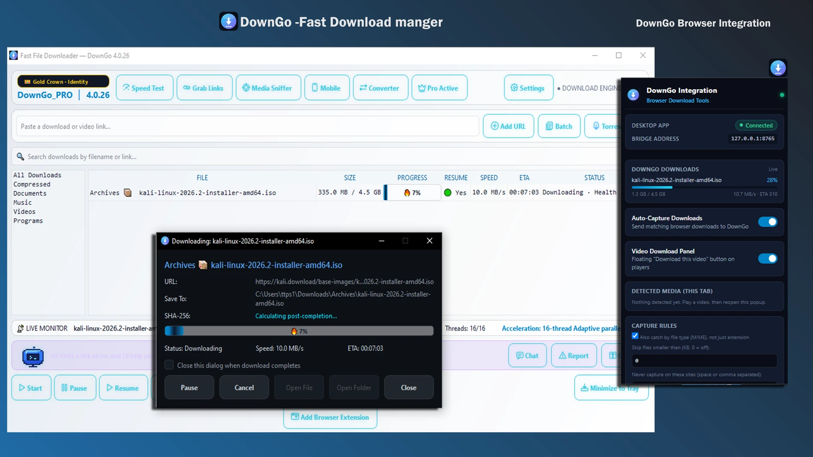
Microsoft Store
Try DownGo for Windows
Free to download with in-app purchases. Check the Store listing for current details.